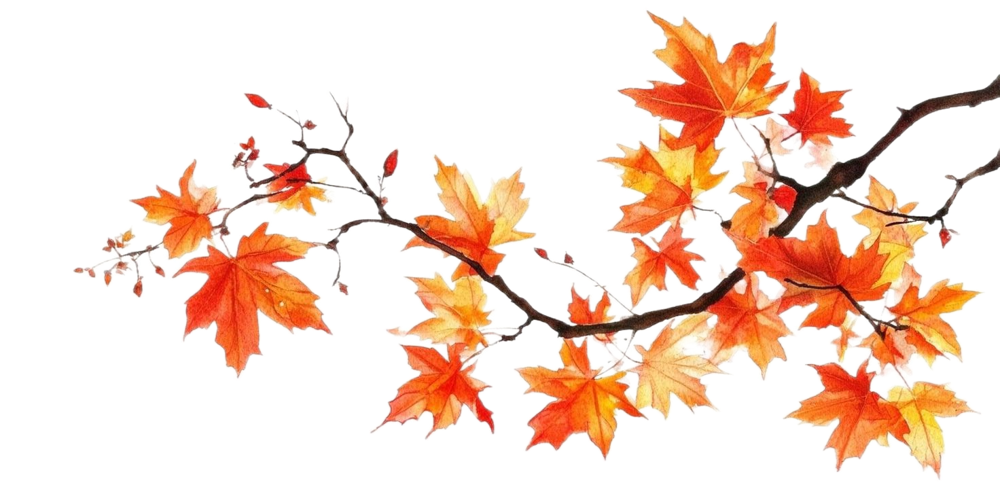

Entre Ríos Mares
Guionista. Investigador. Publicidad.
Scriptwriter, researcher & copywriter
(Novedades x Investigación) + Retención

Creador de historias que entrelazan datos con imaginación, revelando posibilidades que hasta ahora habían pasado por alto.
Vamos a convertir ideas, conocimiento; articular información, de modo que se conviertan en guiones que atrapen, emocionen, enseñen o simplemente (y nada menos) entretengan.
Con formación de grado, talleres de escritura creativa y un amor por las matemáticas, mi caja de herramientas conceptual queda a vuestra disposición.